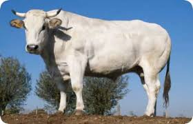

Cuore di bue
Informazioni
- Tempo richiesto:30 minuti
- Dosi per:4 persone
- Costo:medio
|
Ingredienti
- Cuore di bue
- cipolla
- pepe rosso
- un bicchiere d'acqua
- un bicchiere di vino rosso
|
Preparazione
il cuore è un alimento sempre meno utilizzato al giorno d'oggi . Nella mia famiglia non lo cuciniamo alla griglia, lo cuciniamo in padella .
si fa rosolare a fuoco lento un po di cipolla con olio e un po' di pepe rosso , nel frattempo si taglia il cuore a cubetti non molto spessi e dopo 5 minuti
lo mettiamo in padella , il cuore appena viene portato ad alte temperature rilascia un'acquazzina , si continua con la cottura fino a quando non si asciuga quasi del tutto
appena il cuore è quasi asciutto gli aggiungiamo un bicchiere di vino rosso in modo tale da fargli prendere un colorito più scuro e molto più saporito
il vino non si deve fare asciugare del tutto , il cuore deve rimanere un po' umido e morbido
